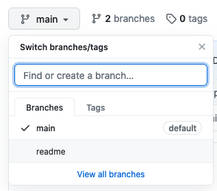
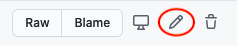

18.9. Project: Git a Remote Repository¶
In this activity, you are going to create a remote repository and practice pushing changes to it from your local machine.
18.9.1. Step 1: Create a New Local Repository¶
- Launch Visual Studio Code and open the terminal panel.
- Navigate into the
local_practicedirectory and create a new folder. You can name it whatever you want, but you will be reusing code from your Turtle Races project. - Use the File menu to open the new folder in VS Code. In the terminal, use
pwdto confirm that you are in the correct directory. - Use
git initto initialize your project as a Git repository. - Move your
turtle_race.pyfile into the directory. You an do this with terminal commands, or you can drag-and-drop the existing file into the folder. - Run
turtle_race.pyto confirm that it still works. If not, debug your program to get it running again. - Save and commit the changes.
- Check the name of your default branch with the
git branchcommand. If necessary, usegit branch -mto change the name of the branch tomain.
Note
If you did not complete the Turtle Races project, no worries. Just add a
new Python file to the repository. Code a simple print statement
inside a loop and run with that.
18.9.2. Step 2: Create a Remote Repository¶
Login to your GitHub account in a web browser. Click on the “+” button to add a new repository.

The New Repository link is in the dropdown menu at top right on GitHub.¶
To create a new repository:
- Fill in the name and description.
- Uncheck Initialize this repository with a README and click Create Repository.
On the next screen, click on the HTTPS button at the top of the page. Next, click the Copy button in the push an existing repository section.
Go back to your terminal and paste the commands copied from GitHub. These should be very similar to:
$ git remote add origin https://github.com/username/turtle-races.git $ git branch -M main $ git push -u origin main
The final command produces quite a bit of output. The final line,
Branch 'main' set up to track remote branch 'main' from 'origin'lets you know that the process worked.Note
You may be asked to enter your GitHub username and personal access token after
git pushandgit pullcommands. Do so whenever necessary.GitHub should now have the same files and code as your local project. Click on the project name link at the top of the page. This takes you to a dashboard that shows you what’s stored in the repo. You can see your code by clicking on different file names.
Your local and remote repositories are now linked. In the terminal, use the
git remote -vcommand to check for the URL of the remote repo.$ git remote -v origin https://github.com/username/turtle-races.git (fetch) origin https://github.com/username/turtle-races.git (push)
{kind=link}
{kind=link}
{kind=link}
18.9.3. Step 3: Push to the Remote Repository¶
Right now, your local and remote repositories match. As you continue working on your device, the two repos become different. From time to time, you need to push your local commits up to GitHub to keep the local and remote versions the same.
In VS Code, add a new text file called
README.txt. Inside the file, add a short description of your Turtle Races project.Save and commit your changes to the local repo.
To update the version stored on GitHub, enter the command
git push origin mainin the terminal. The output includes information about what’s happening on GitHub. The final lines indicate if the push was successful, and they will look something like:To https://github.com/username/turtle-races.git 51dbfe6..2e6f4fa main -> main
After making the push, you should see
README.txtadded to the GitHub repository. The contents of that file also appear below the list of file names.
{kind=link}
18.9.3.1. Push a New Branch¶
Whenever you push changes up to GitHub, the action only affects the current
branch. In the steps above, you updated main.
Back in VS Code, use
git checkout -bin the terminal to create a new branch calledreadme.In the new branch, make some changes to the
README.txtfile. Save and commit those changes.Your local repository contains two branches now, but GitHub only knows about one. To add the new branch to the remote, just use its name instead of
mainin thegit pushcommand:$ git push origin readme To https://github.com/username/turtle-races.git * [new branch] readme -> readme
After this push, your GitHub project shows a list of branches in a dropdown menu.
Select different branches from the dropdown menu.¶
Click on
README.txtto see its contents. Use the dropdown menu to switch between themainandreadmebranches. Notice how the text changes inside the file.
Note
In Assignment #5, you will learn how to perform a merge in GitHub. For now, we will leave the branches separate.
18.9.4. Step 4: Pull Down Changes From the Remote¶
If you are working with a team on a project, it is very likely that one of your partners will push up changes to GitHub. When this happens, you need to pull those changes down to your own device.
To practice this, make a change in GitHub and then move those changes to your local repo.
In your GitHub project page, select the
readmebranch from the dropdown menu.Click on the
README.txtfile name, then select pencil icon to edit the file.Add some more text to the file, or change the words already there. When done, click the Commit changes button at the bottom of the page.
Return to VS Code, and make sure you are in the
readmebranch.$ git branch * main readme $ git checkout readme
Enter the command
git pull. Just likegit push, the output tells you what’s happening to your local files. The final lines indicate if the pull was successful, and they will look something like:$ git pull Lots of output... Updating b407366..03f9f4c README.txt | 5 ++++- 1 file changed, 4 insertions(+), 1 deletion(-)
The
+and-symbols indicate additions or deletions from the listed files.
{kind=link}
After the pull, you will see the updated text appear in VS Code.
18.9.5. Success¶
Nice work! You now have experience with:
- Creating a new local repository.
- Creating a remote repository on GitHub.
- Linking your local and remote repos.
- Pushing and pulling changes between your local and remote versions.